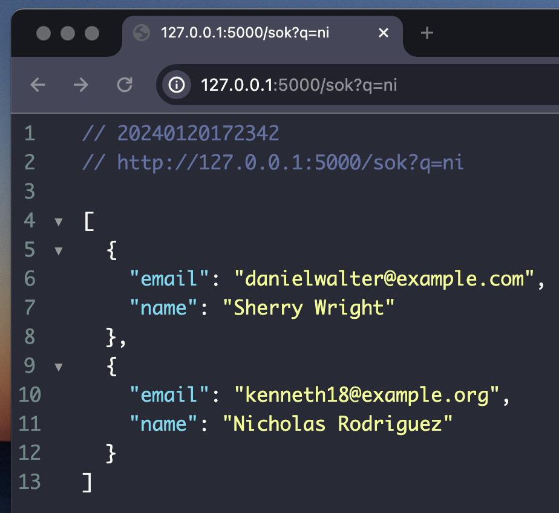

Kapitel 8 - SQLAlchemy: Sökfunktionen
#I det här kapitlet ska vi göra en sökfunktion för våra användare. Vi ska använda oss av SQLAlchemy för att söka i vår databas. Vi ska även använda oss av Jinja för att visa upp våra resultat.
För tillfället så har vi bara en användare i vår databas (om du inte
la till fler i förra kapitlet). Vi ska lägga till fler användare för
att kunna testa vår sökfunktion. Vi ska därför göra en lite mer
avancerad version av vår add_user funktion.
Lägg till flera användare
#I förra kapitlet så gjorde vi en funktion som lade till en exempel-användare. Det kallar man för att seeda. Detta kan man manuellt göra i en databashanterare, eller från webbaplikationen. Men vi vill ha 20 användare, så varför inte använda våra kunskaper i Python för att göra det åt oss?
Vi kommer att börja med att göra om vår
seed_data-funktion. För att testa en applikation på ett
bra sätt, så är det fördelaktigt att ha lite olika testdata som ser
verklig ut, men är fake. Vi ska därför använda oss av en modul som
heter faker. Det är en modul som kan generera fakedata.
Vi börjar med att öppna vår gamla kod från förra kapitlet. Den hittar du här:
Vi börjar med att installera och importera Faker i vår
app.py fil:
pip install fakerfrom faker import Faker
Ta sedan bort all kod i vår seed_data()-funktion. Vi
skapar sedan en instans av Faker och sparar den i en
variabel som vi kallar för fk i vår funktion:
# app.py ...
def seed_data():
fk = Faker()
# ...fk för att det
är en vanlig förkortning för faker och skiljer sig från
eventuella variabler som skulle kunna heta faker.
Nu ska vi skapa en while-loop som körs 100 gånger. Vi ska sedan skapa en ny användare för varje gång loopen körs. För att få trovärdiga resultat så kommer vi alltså att använda oss av faker för att skapa en ny användare varje gång.
# app.py ...
def seed_data():
fk = Faker()
iterations = 0
while iterations < 20: # Vi börjar med 20
user = User(
name=fk.name(),
email=fk.email(),
)
db.session.add(user)
db.session.commit()
iterations += 1
# ...Ta nu bort de gamla användarna och starta om flaskappen:
python app.pyNu har vi skapat den enklaste av seed-funktioner. Men just nu behöver vi inte mer.
Vi bygger sök
#Nu ska vi skapa en sökfunktion. Vi ska använda oss av SQLAlchemy för att söka i vår databas. Vi ska även använda oss av Jinja för att visa upp våra resultat.
Jag tänker göra sökfunktionen överst i vår
index.html-fil. Men när vi söker kommer vi komma till en
separat sida, med resultaten. Vi börjar med att klistra in detta
överst i vår index.html-fil:
{# templates/index.html #}
<form>
<input type="text" name="search" placeholder="Sök efter användare">
<button type="submit">Sök</button>
</form>
{# ... #}
Vi skapar sedan en ny route i vår app.py-fil. Vi kallar
den för sok och den ska ta emot en
GET request och returnera en JSON-fil med sökresultatet
för att testa om det fungerar. Så vi börjar med att importera
jsonify från flask:
from flask import jsonify
Vi skapar en variabel som heter input och sparar det som
vi får från vår GET-request i den. Vi returnerar sedan en
JSON-fil med det som vi får från vår GET-request:
# app.py ...
@app.route("/sok", methods=["GET"])
def sok():
input = request.args.get("q")
return jsonify({"q": input})
# ...
Nu funkar det att skicka en input mellan två routes. Nu ska vi skapa
själva sökfunktionen. Vi börjar med att skapa en variabel som heter
users och sparar alla användare i den som vi gjorde när
vi listade alla användare. Efter det skapar vi en variabel som heter
input och sparar det som vi får från vår
GET-request i den.
# app.py ...
@app.route("/sok", methods=["GET"])
def sok():
users = User.query.all()
input = request.args.get("q")
return jsonify({"q": input})
# ...
Nu ska vi skapa en ny dictionary som vi kallar för
results. Vi ska sedan loopa igenom alla användare och
lägga till dem i vår dictionary. Vi ska använda oss av
contains-metoden för att söka efter användare som
innehåller det som vi skickar med i vår GET-request. Vi
ska sedan returnera vår results-dictionary som en
JSON-fil:
# app.py ...
@app.route("/sok", methods=["GET"])
def sok():
input = request.args.get("q")
users = User.query.filter(User.name.contains(input)).all()
results = [{"name": user.name, "email": user.email} for user in users]
return jsonify(results)
# ...Kodsammanfattning
På rad 5 ber vi SQLAlchemy att flitrera ut resultat med
den inbyggda filterfunktionen. Vi specificerar till att vi vill ha
alla användare som innehåller det som vi skickar med i vår
GET-request. Vi sparar sedan alla användare i en variabel
som vi kallar för users. Vi loopar sedan genom resultatet
och lägger de till vår dictionary som sedan blir en json-fil med hjälp
av jsonify.
Söka i flera fält
#
Nu har vi en sökfunktion som returnerar alla användare som innehåller
det som vi skickar med i vår GET-request. Vi vill såklart kunna söka
alla igenom alla mail-adresser också. Vi vill alltså kombinera två
filter. Vi kan göra det med hjälp av
or_-metoden. Vi börjar med att importera den från
SQLAlchemy:
from sqlalchemy import or_
Vi kan nu använda oss av or_-metoden för att kombinera
två filter. Vi ändrar vår filter-metod till att se ut så
här:
# app.py ...
@app.route("/sok", methods=["GET"])
def sok():
input = request.args.get("q")
users = User.query.filter(
or_(User.name.contains(input), User.email.contains(input))
).all()
results = [{"name": user.name, "email": user.email} for user in users]
return jsonify(results)
# ...Vi dubbelkollar så att den söker på både mail och namn, genom att leta på ett sökord som borde finnas i båda, detta är bara för att demonstrera att det fungerar. Det är inget du behöver göra:
 Som vanligt så kan utseendet på din och min JSON-fil skilja sig åt. Innehållet är det viktiga!
Nu när vi vet att vi kan söka på både namn och e-mail så kan vi göra
en webbsida som visar alla resultat. Vi skapar en sida som heter
sok.html i vår templates-mapp. Sedan skriver gör vi en
Jinja-kod som loopar igenom alla resultat och visar upp dem:
{# templates/sok.html #}
<h1>Sökresultat</h1>
<ul>
{% for user in results %}
<li>
<h2>{{ user.name }}</h2>
<p>{{ user.email }}</p>
</li>
{% endfor %}
</ul>
I våran route /sok så renderar vi en template istället
för att returnera en JSON-fil. Vi skickar även med listan "results"
som vi tidigare gjorde som en JSON-fil:
# app.py ...
return render_template("sok.html", results=results)
#... Nu har vi skapat en sökfunktion i SQLAlchemy!